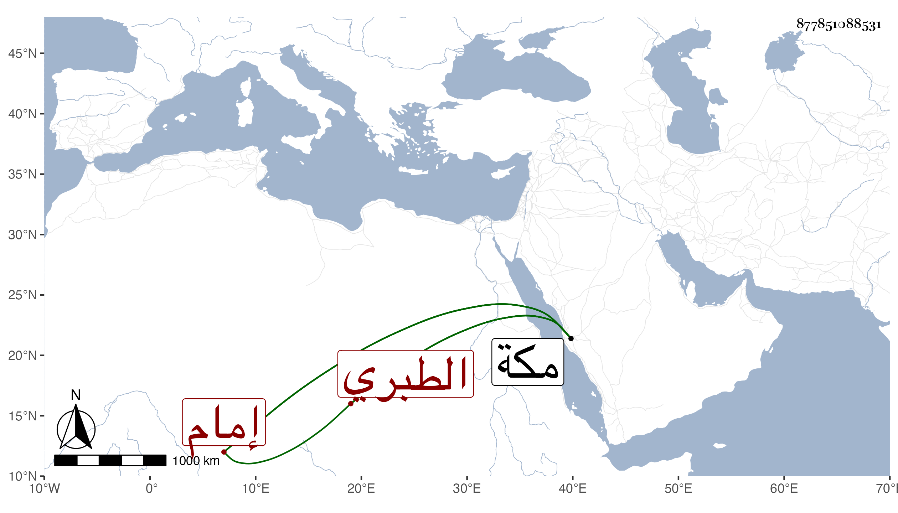

0902Sakhawi.DawLamic.ITO20230111-ara1.EIS1600.877851088531
Biography ID: 877851088531
341
عبد الهادي بن أبي اليمن محمد بن أحمد بن الرضى إبراهيم بن محمد بن إبراهيم بن أبي بكر بن محمد بن إبراهيم الطبري إمام المقام . ولد سنة ثمانين وسبعمائة بمكة ونشأ بها فسمع من أبيه وعمه أبي البركات وابن صديق وغيرهم وأجاز له النشاوري والتنوخي وابن حاتم والصردي والمليجي والعراقي والهيثمي وطائفة وما كأنه حدث بل أجاز في الاستدعاءات لابن فهد وغيره وولي نصف إمامة المقام بمكة بعد أخيه أبي الخير محمد شريكا لابن عمه الرضي محمد بن المحب محمد بن أحمد بن الرضي ثم ابنه المحب فاستمر حتى مات بل ناب في الخطابة بالمسجد الحرام وكان خيرا مباركا ساكنا . مات في خامس عشري صفر سنة خمس وأربعين بمكة رحمه الله .
